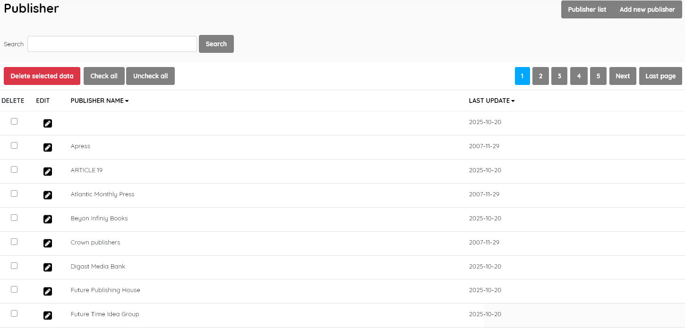
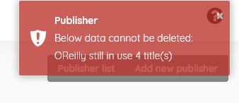

This look-up table contains the authoritative list of publishers used in the catalogue.
This function enables management of the publisher master-file. It displays the list of publishers ( e.g Penguin , CSIRO Publishing, etc ) in the lookup table , with data for:
Publisher name (authoritative name of the publisher)
Last update (when the record was last edited)

This section is provided with facilities to DELETE, ADD, and EDIT publisher data.
If you wish to edit an entry you must select it , click the little edit pen button, and then on the resulting screen also click the EDIT button to enable editing. It’s a type of “safety mechanism”.
A search function allows you to search for entries by publisher keywords.
Results can be sorted by clicking on the field name at the top of each column.
This provides the facility to add publishers directly to the data in the Senayan system. Publishers’ information includes the fields listed above, with the exception of Last updated, which is done automatically when the Save button is clicked.
Adding a publisher to the master-file can also be done during the cataloguing data input for a new title if the publisher is not found to exist in the master-file during the publisher data input. In that case, the option to Add the publisher will be presented to the cataloguer, so care should be taken to enter data correctly as the name will then be added to the master-file.
SLiMS does not translate master-file entries. Data is displayed as it has been entered.
A publisher must be selected first, and after clicking the DELETE SELECTED DATA button a requester will appear, asking for confirmation.
If the Publisher Name is in use in any existing catalogue records, it cannot be deleted, and a notification will appear, like below:

Note: As of SLiMS 9.7.2, it is possible for copy-cataloguing or other data imports ( e.g. direct sql file inputs to the database) to create an empty record in the Publisher Name field, as illustrated in the Publisher List above. Such a record cannot be deleted via the master-file module easily, nor searched for readily. As a workaround, select EDIT and then insert a character such as “.” or “_“, as the Publisher Name. It should SAVE successfully. You can then search for any catalogue records using that publisher name. Alternatively, such a record can be ignored and left, or removed by resorting to database tools such as phpMyAdmin.